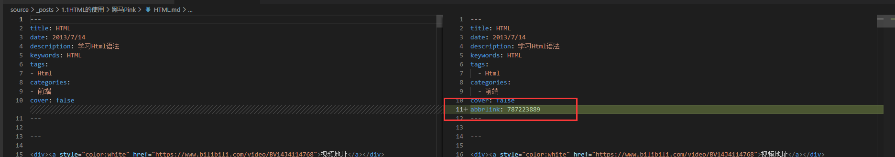

Hexo
一、安装
1 | 安装 hexo |
新建完成后，指定文件夹的目录如下：
1 | . |
二、配置
github 配置
1 | deploy: |
gitee 配置
1 | deploy: |
三、相关命令
1 | 启动 |
四、主题配置
下载 主题文件
1 | git clone https://gitee.com/immyw/hexo-theme-butterfly.git |
配置主题
1 | theme: butterfly |
五、错误排错
1、如果你沒有 pug 以及 stylus 的渲染器会报错
1 | extends includes/layout.pug block content include ./includes/mixins/post-ui.pug #recent-posts.recent-posts +postUI include includes/pagination.pug |
- 解决方案
1 | npm install hexo-renderer-pug hexo-renderer-stylus --save |
2、解决图片不能显示的问题
1 | npm install hexo-asset-image save |
首先在 主配置文件 配置
1 | post_asset_folder: true |
打开 node_moduels 下 hexo-asset-image 下的 index.js 文件，将
1 | $(this).attr('src', config.root + link + src); |
改为
1 | $(this).attr('src', "./" + src); |
3、安装git 插件
1 | npm install --save hexo-deployer-git |
六、显示PDF文件
1、安装插件
1 | npm install --save hexo-pdf |
2、修改项目的 _config.yml配置
1 | post_asset_folder: true |
3、在source_posts下创建目录，放入pdf文件
4、创建与上面目录相同名的md文件
注意：md文件的名称一定要与第三步创建的目录同名，如我的目录是PDF01，那 md 文件名为PDF01.md
1 | --- |
5、保存启动即可
七、创建文章
1、创建文章
命令行中输入：
1 | $ hexo new "new article" |
之后在source/_posts目录下面，多了一个new-article.md的文件。
| 参数 | 描述 |
|---|---|
-p, --path |
自定义新文章的路径 |
打开之后我们会看到：
1 | title: new article |
文件的开头是属性，采用统一的yaml格式，用三条短横线分隔。下面是文章正文。
2、创建草稿
草稿相当于很多博客都有的“私密文章”功能。
1 | $ hexo new draft "new draft" |
会在source/_drafts目录下生成一个new-draft.md文件。但是这个文件不被显示在页面上，链接也访问不到。也就是说如果你想把某一篇文章移除显示，又不舍得删除，可以把它移动到_drafts目录之中。
下面这条命令可以把草稿变成文章，或者页面：
1 | $ hexo publish [layout] <filename> |
如果你希望强行预览草稿，更改配置文件：
1 | // 这种方式，会将草稿 发布到线上 |
或者，如下方式启动server：
1 | $ hexo server --drafts |
八、设置博客内容
1 | --- |
设置某些字段不显示
1 | <div> |
九、常用插件
1、abbrlink
hexo-abbrlink 插件基于文章的标题自动为文章生成固定链接。可以把链接permalink转为数字的插件，配置容易，生成时自动转为数字。
1.安装
安装npm包:
1 | npm install hexo-abbrlink --save |
修改_config.yml文件中的配置项:
1 | permalink: posts/:abbrlink/ |
2.设置
Abbrlink插件拥有两项设置选项:
- alg: 算法(目前支持crc16和crc32算法，默认值是crc16)
- rep: 形式(生成的链接可以是十六进制格式也可以是十进制格式，默认值是十进制格式)
3.示例
1 | # abbrlink config |
生成的链接地址将会和下面的实例看起来相似:
1 | crc16 & hex |
4.局限
crc16算法生成的最大数是65536
5.原理
会在文件中生成一个文章ID

 微信
微信 支付宝
支付宝